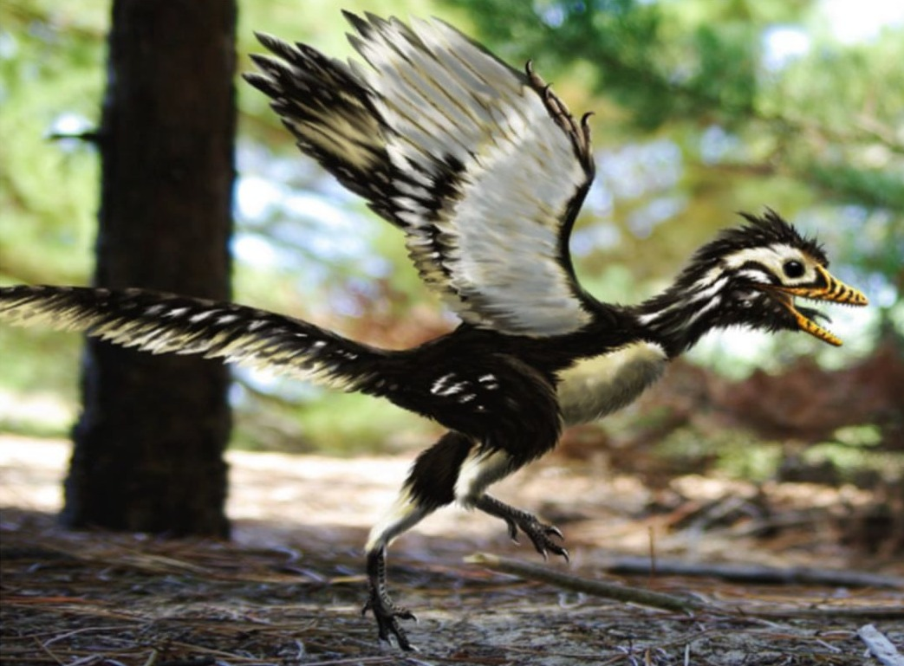
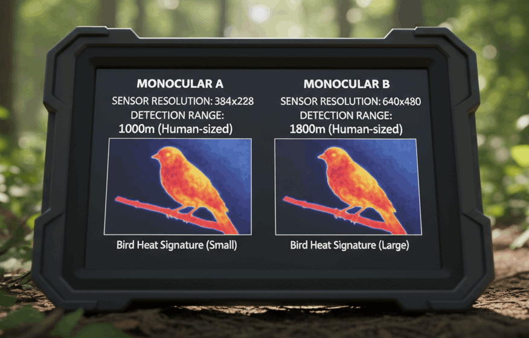

Website Builder Software
Archaeopteryx: overgangsdyr mellem krybdyr og fugl
Fuglene opstod fra theropode dinosaurer for ca. 150–160 millioner år siden i juraperioden. Archaeopteryx er det berømteste fossil fra overgangen. I dag udgøres klassen af over 10.000 arter.
Fjerene er sandsynligvis opstået hos dinosaurer primært til isolation og måske signalering – ikke til flyvning. Men de viste sig at være perfekte til at skabe en flyveflade. Evnen til at flyve åbnede et helt nyt tredimensionalt rum, som ingen andre hvirveldyr beherskede fuldt ud: luften.
Flyvning kræver et enormt energiforbrug. Det er her, varmblodet bliver afgørende. Fugle kan opretholde høj muskelaktivitet uanset om det er koldt eller varmt – en umulighed for vekselvarmede dyr. Prisen er et højt fødeforbrug, men gevinsten er enorm: fugle kan leve i arktis, troperne og alt derimellem.
Det lette skelet og næb uden tænder tjener ét formål: at gøre kroppen så let som muligt. Flyvning er dyrt i energi, og evolutionen har trimmet alt unødvendigt væk.

Hvis man tager et billede af en fugl med et varmekamera, kan man se at den er varmere end omgivelserne. Man siger at den er varmblodet/vekselvarm.
Fjer: Lette, stærke og isolerende – afgørende for flyveevnen og temperaturreguleringen.
Varmblodede: Opretholder konstant høj kropstemperatur uanset omgivelserne.
Modificerede forlemmer til vinger: Fuglenes arme er omdannet til vinger med fjerdækket flyveflade.
Let knogleskelet: Mange knogler er luftfyldte, hvilket reducerer vægten drastisk.
Næb uden tænder: Hos moderne fugle – letter kraniet og reducerer vægten.
Website Builder Software